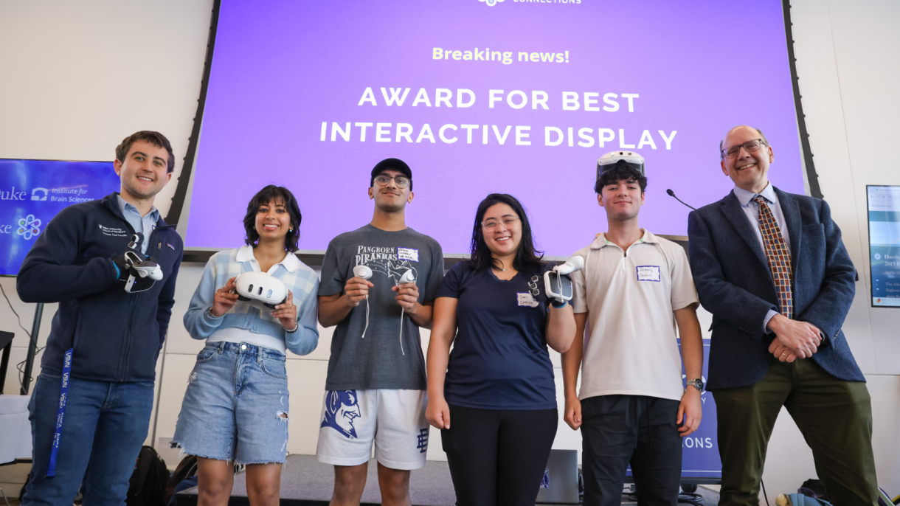

Medicine is learned by doing. Whether it is a first-year student holding a scalpel for the first time or an interventional radiology trainee threading a catheter under fluoroscopy, the best teaching starts the moment a learner is hooked.
My Role as a Teacher
I think of myself as someone who designs the moment a student gets excited. On the first day of my VR-HEAL class, I did not open with a lecture on tunneled catheter placement. I brought in a lock picking set. The students spent the first hour learning to feel their way through a lock with nothing but tactile feedback. By the end of the session, they understood the core of interventional radiology: precise movements guided by feel, not sight. That is the kind of teaching I want to build more of.
I have not yet had the opportunity to teach residents, but everything I design is built with that goal in mind. Whether I am structuring a cadaveric dissection so students discover anatomical relationships on their own or building a VR simulation realistic enough to rehearse a procedure, my job is to create environments where learners teach themselves through practice.
How I Believe Learning Works
Learning sticks when it begins with engagement. Students retain more when they are problem-solving under realistic constraints than when they are passively absorbing information. The constraints of low-resource settings are particularly powerful here. When I design a VR training module to replace an expensive cadaver lab, I have to distill a procedure to its core steps. That constraint-driven clarity is a feature, not a limitation. It applies whether the setting is a simulation lab in Durham, a hospital in a low-income country, or a spacecraft.
Bringing the Unfamiliar Close to Home
I am passionate about taking topics that feel distant and making them personal. Space medicine is a perfect example. Most students do not walk into a classroom thinking about bone density loss in microgravity, but they do care about osteoporosis in their grandparents. The physiology of decompression sickness in astronauts connects directly to what happens to a recreational scuba diver. Every course I have built starts by connecting the unfamiliar to something the learner already knows. The novelty of the subject draws them in; the connection to real life keeps them.
This is how I believe space medicine will always be best studied: not as an exotic specialty, but as a lens that sharpens our understanding of health right here on Earth.
Meeting Learners Where They Are
Not every student learns the same way, and good teaching adapts. As an Anatomy Teaching Assistant, I develop customized education modules for students with learning accommodations, adapting material across visual, kinesthetic, and verbal modalities. In my Coursera course, I made the full certificate free so cost would never be a barrier. Teaching should open doors, not close them.
What I Ask of My Students
I expect learners to show up ready to engage. In every course I have built, the student’s job is not to memorize but to participate: to ask questions during dissection, to troubleshoot a VR simulation, to challenge a guest lecturer’s assumptions. My role is to create the conditions for that engagement. Theirs is to bring the curiosity.